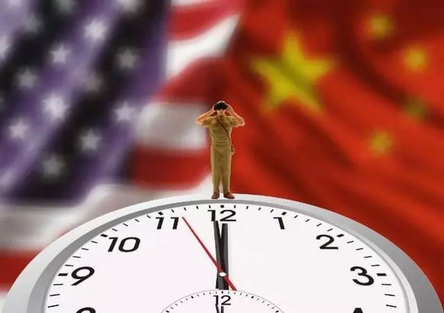

口述实录 | 塔瑞克：远在也门的妈妈现在不哭了，我在上海的寒假过得挺好
原文链接 备份链接 现在我的妈妈再和我视频，我会告诉她，事实证明她看到的电视新闻是假的。儿子在上海很安全就是最好的证明。尽管她还是每天看电视新闻，但真的不哭了。 口述 | 塔瑞克 整理 | 姜浩峰 我是塔瑞克（Tariq），上海师范大学本 …

基于疫情冲击的现实情况，可以优先落实医疗用品等相关协议内容的执行，并在保证中方正常权益的情况下，推动双方在延伸领域的技术合作和人员交流，将疫情转化为双边的合作契机

徐奇渊 | 文
当前，疫情已经对中国宏观经济运行产生了影响，春节期间部分服务行业受到较大冲击。在此背景下，1月15日中美签署的第一阶段协议当中的2000亿美元采购承诺可能受到影响。
如果可能，中国应以合适的方式，提出推迟实施这一采购计划。
四方面原因将迫使中国推迟采购
中国经济增速下滑，进口需求受到冲击。
中国国内航空受到较大冲击，客流量和航班大幅减少。航空公司经营状况将受到较大冲击，资金链也将受到影响。目前疫情发展仍存在一定的不确定性，短期内难以实施大规模的飞机采购方案。
此外，国内工业生产尚未完全恢复正常秩序，整体生产进度较往年明显滞后。在比较乐观的情况下，即便是全国在3月初基本实现复产，生产也将推迟一个月，而且疫区复产还需要更长时间。因此，一阶段协议中，中国对美国的工业机械、电气设备、能源等进口需求，也将需要明显推后。
一季度中国的国际收支压力将明显增大，扩大采购将进一步加大国际收支失衡的压力。
疫情冲击下，进口虽然有所下降，出口可能面临更大压力。由于复工时间明显推迟，即使某些地区复工，但受到供应链断裂、人流阻碍和隔离、生产防护物资缺乏，以及可能的订单流失等影响，出口制造业将面临较大压力。
作为一个参照，非典期间，2003年一季度曾经出现贸易逆差10.2亿美元，这是当时1994年有数据之后的第2次季度逆差。作为一个比较，2002年一季度的贸易顺差为72.7亿美元。目前来看，中国在今年一季度贸易顺差可能出现大幅下滑，甚至不排除转向逆差。
美国方面启动公共卫生紧急状态，禁航和停办签证等举措，也将减少中国从美国进口商品和服务的渠道。
中美第一阶段协议当中约定，2019年中国在服务贸易方面的进口，应比2017年增加128亿美元。而服务贸易方面，最重要的就是旅游业。根据美国国家旅游办公室（NTTO）的数据：2017年中国赴美游客达到峰值，随后在贸易冲突的背景下，2018全年、2019年前三季度，中国赴美游客同比分别下降5.7%、4.7%。
而这次疫情，将使2020年全年的中国赴美游客数量，在2019年的基础上进一步出现下降。2020年2月初，达美航空、美联航、美国航空均暂停了美国往返中国内地的所有航班，时间将持续到3月末甚至4月末。这将影响到中国游客前往美国的商务出差及旅游，从而减少第一阶段协议中我承诺对美国的服务业进口。假定赴美游客人均花销不变，那么在服务贸易项下，2020年中国赴美旅游的支出将较2017年下滑21.4%，这将中国减少从美国购买旅游服务75.5亿美元。同时，还将影响到保险等相关金融服务。显然，这将使中国实现服务业采购承诺的难度大大上升，而且这些新的约束条件主要来自美国方面的限制措施。
此外，客机航班的停飞，也将影响到客机腹仓运输的联运服务，从而减少中国从美国进口高附加值产品。当然，客机腹仓运输占比较小，所以影响不大，但如果货运航空和船运受到影响，则中国将难以正常执行进口承诺。
供给方面，中国推迟复工已经对全球供应链产生冲击，可能对美国企业的出口交货能力产生影响。
武汉是中国四大乘用车基地之一，世界汽车零部件20强有一半落户武汉。此外，延迟复工的范围远超武汉，涉及行业也更为广泛。国内制造业的供应链已经受到冲击。
德国博世集团已经发出预警，如果疫情持续时间较长，其全球供应链将会中断。事实上，韩国现代已经暂停了一款重要车型的生产，并计划逐步暂停韩国的整车生产线。日产也将停止部分生产线。从美国方面来看，汽车工业约有15%的零部件依赖于中国供应商，智能手机、笔记本电脑等电子产品的比例更是在50%或以上。
推迟对美采购具有可能性
第一阶段协议中也给出了疫情的适用条款。协议指出，“如因自然灾害或其他双方不可控的不可预料情况，导致一方延误，无法及时履行本协议的义务，双方应进行磋商。”鉴于疫情已经对中国经济产生了巨大的不可抗冲击，美方也为此启动了公共卫生紧急状态、承认了这种冲击具有严重性和不可控性，因此中美双方可基于此探讨一阶段协议推迟执行的可能性。
对于疫情可能导致一阶段协议推迟执行，美国政府和社会舆论已经有一定的心理准备。纽约时报、福布斯等媒的评论均指出了这种可能性。2月4日，美国总统特朗普的首席经济顾问拉里·库德洛(LarryKudlow)在接受福克斯商业新闻网采访时也指出“由于中国的疫情，实现一阶段协议中的出口增长可能需要更长的时间”。
应将疫情转化为合作契机
避免疫情使双边关系紧张升级，将疫情转化为合作契机。一阶段协议推迟执行，中国进口进度不及预期，可能使特朗普政府在美国国内面临更大的舆论压力，激化双边关系紧张气氛，加大双方的第二阶段谈判难度。为此，可以基于疫情冲击的现实情况，优先落实医疗用品等相关协议内容的执行，并在保证我方正常权益的情况下，推动双方在延伸领域的技术合作和人员交流，将疫情转化为双边的合作契机，积极扩展双边合作领域。
徐奇渊，中国社科院世界经济与政治研究所研究员，CF40研究部主任；编辑王延春

▲点击图片查看更多疫情报道
责编 | 黄端 duanhuang@caijing.com.cn
本文为《财经》杂志原创文章，未经授权不得转载或建立镜像。如需转载，请在文末留言申请并获取授权。
原文链接 备份链接 现在我的妈妈再和我视频，我会告诉她，事实证明她看到的电视新闻是假的。儿子在上海很安全就是最好的证明。尽管她还是每天看电视新闻，但真的不哭了。 口述 | 塔瑞克 整理 | 姜浩峰 我是塔瑞克（Tariq），上海师范大学本 …
原文链接 备份链接 题记：“影响大众想象力的，并不是事实本身，而是它扩散和传播的方式。” ——古斯塔夫·勒庞《乌合之众》 世卫组织近日将此次新冠病毒带来恐慌和混乱的问题称为“信息疫情”（Infodemic），并指出“社交媒体上散布着大量有 …
原文链接 备份链接 作者：北林 编辑：北林 特别感谢：传媒工作者们 1 我现在的主要工作是为支援中国各地抗疫人力、物力对接手里的各种资源，并积累资源以方便日后的对接。 每天一打开手机，微信的消息要更新近十分钟才能更新完，128G的手 …
原文链接 备份链接 资本市场关注的是“变化的变化”，即二阶导数，所以资本市场认为疫情影响的拐点已经出现了 文 |《巴伦》中国撰稿人张晓添 编辑 | 康娟 进入2月中旬，新型冠状病毒引发的疫情正在从爆发期进入平稳期。国内外资本市场从回调到反 …
原文链接 备份链接 2020年全球GDP年增长率受疫情影响将降低0.2%左右几天前，新西兰渔民们把刚刚捕来的共100多吨大龙虾放生大海。当地媒体报道，中国传统春节是新西兰龙虾出口最畅销的时候，但今年受新冠状病毒疫情影响，中国客户纷纷取消 …